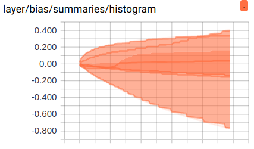
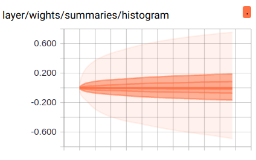
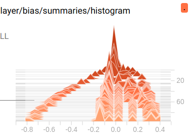
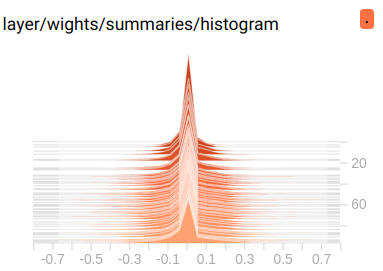

Tensorflow 网络运行
Table of Contents
1 Tensorboard 网络运行
1.1 其他步骤
为了防止图被重复的载入内存, 应按照如下步骤运行:
<<get-pid>>
<<kill-pid>>
<<del-graph-summary>>
<<tensorboard-run>>
<<run-tensorboard>>
ps -aux | grep "python" | grep -E "(lec4|tensorboard)" | grep -v "grep" | awk '{print $2}'
| 3679 |
| 3684 |
| 3799 |
;; 取元素 (defun r1l(tbl) (mapcar (lambda (x) (number-to-string (car x))) tbl) ) ;; (print pid) ;; (print (reduce-one-layer pid)) (mapcar #'shell-command-to-string (mapcar (lambda (x) (concat "kill " x)) (r1l pid))))
rm -rf /home/yiddi/git_repos/on_ml_tensorflow/logs/* ls /home/yiddi/git_repos/on_ml_tensorflow/logs
1.2 三种summary对应的图
summary.histogram


sumamry.scalar

summary.scalar

1.3 代码结构
<<包导入>> <<数据准备>> # numpy构造(with/without noise) # 从已有数据集导入内存 <<图参数>> # 批次大小 # 批次数量 # dropout 保留率 <<工具函数>> # 记录变化过程的量的函数 <<图构造>> # 一神: NN layers, name_scope for TB, 参数 summary # 0. 名称空间设置 # 1. 第一层权重, 声明 summary tf.summary.scalar/image/histogram node # 2. 第一层偏置, 声明 summary tf.summary.scalar/image/histogram node # 3. 第一层输出, 声明 summary tf.summary.scalar/image/histogram node # 0. 名称空间设置 # 1. 第二层权重, 声明 summary tf.summary.scalar/image/histogram node # 2. 第二层偏置, 声明 summary tf.summary.scalar/image/histogram node # 3. 第二层输出, 声明 summary tf.summary.scalar/image/histogram node # 两函: # 1. err_fn: # 1.1 名称空间设置 # 1.2 err fn(单点错误), 声明 summary tf.summary.scalar/image/histogram node # 2. loss_fn: # 2.1 名称空间设置 # 2.2 loss fn(整体错误), 声明 summary tf.summary.scalar/image/histogram node # 两器: # 1. 初始化器 # 2. 优化器 # 2.1 名称空间设置 # 准确率计算 # 1. correct_prediction # 1.1 名称空间设置 # 2. accuracy # 2.1 名称空间设置 # 合并summary <<图计算>> # 运行初始化器 # summary Writer for TB # for epoch_num: << # 1. for batch_num: # 1.1 x_y_of_next_batch; # 1.2 运行 优化器计算 and summary计算 # 2. 运行准确率计算 # matplot绘图
1: import tensorflow as tf 2: from tensorflow.examples.tutorials.mnist import input_data 3: 4: # 载入数据 5: mnist = input_data.read_data_sets("MNIST", one_hot=True) 6: 7: # 设置批次大小 8: batch_size = 100 9: # 计算共有多少批次 10: n_batch = mnist.train.num_examples // batch_size 11: 12: # 参数概要 13: # 一个 helper 方法, 当你在定义图的时候, 想要分析某个参数的改变过程,就可以把他们存在 summary file 中. 14: # 这个方法就是帮你做这个事情, 你可以记录这个变量值的 mean, stddev, 15: def variable_summaries(var): 16: with tf.name_scope('summaries'): 17: mean = tf.reduce_mean(var) 18: tf.summary.scalar('mean', mean) # 利用 summary 记录mean值,并赋名 19: with tf.name_scope('stddev'): 20: stddev = tf.sqrt(tf.reduce_mean(tf.square(var - mean))) 21: tf.summary.scalar('stddev', stddev) 22: tf.summary.scalar('max', tf.reduce_max(var)) 23: tf.summary.scalar('min', tf.reduce_min(var)) 24: tf.summary.histogram('histogram', var) # 利用 summary 直接绘制一个图 25: 26: 27: # TB:想在TB把某几个node放在一起显示为一个整体模块, 要把他们置于一个命名空间 28: with tf.name_scope('input'): 29: # 定义两个 placeholder <<< 需要调整到 name_scope 下 30: x = tf.placeholder(tf.float32, [None, 784], name='x-input') 31: y = tf.placeholder(tf.float32, [None, 10], name='y-input') 32: 33: 34: # TB:想在TB把某几个node放在一起显示为一个整体模块, 要把他们置于一个命名空间 35: with tf.name_scope('layer'): 36: # 创建简单神经网络(无隐藏层) 37: with tf.name_scope('wights'): 38: W = tf.Variable(tf.zeros([784, 10]), name='W') 39: variable_summaries(W) 40: with tf.name_scope('bias'): 41: b = tf.Variable(tf.zeros([10]), name='b') 42: variable_summaries(b) 43: with tf.name_scope('score'): 44: score = tf.matmul(x, W) + b 45: with tf.name_scope('softmax'): 46: prediction = tf.nn.softmax(score) 47: 48: # 二函,二器 49: with tf.name_scope('loss'): 50: loss = tf.reduce_mean(tf.nn.softmax_cross_entropy_with_logits_v2(labels=y, logits=prediction)) 51: tf.summary.scalar('loss', loss) 52: 53: with tf.name_scope('train'): 54: train_step = tf.train.GradientDescentOptimizer(0.01).minimize(loss) 55: 56: init = tf.global_variables_initializer() 57: 58: with tf.name_scope('accuracy'): 59: with tf.name_scope('correct_prediction'): 60: # 预测对错存在一个向量中 61: correct_prediction = tf.equal(tf.argmax(y,1), tf.argmax(prediction, 1)) 62: with tf.name_scope('accuracy'): 63: # 计算准确率 64: accuracy = tf.reduce_mean(tf.cast(correct_prediction, tf.float32)) 65: tf.summary.scalar('accuracy', accuracy) 66: 67: # 合并所有的 summary 68: merged = tf.summary.merge_all() 69: 70: # 图计算 71: with tf.Session() as sess: 72: sess.run(init) 73: # TB: 这里需要添加一个 writer 74: writer = tf.summary.FileWriter('/home/yiddi/git_repos/on_ml_tensorflow/logs/', sess.graph) 75: # 采取训练一轮就测试一轮的方式 76: for epoch in range(100): 77: # 训练模型 78: for batch in range(n_batch): 79: batch_xs, batch_ys = mnist.train.next_batch(batch_size) 80: # 一边训练一边记录 mergerd summary 81: summary, _ = sess.run([merged, train_step], feed_dict={x:batch_xs, y:batch_ys}) 82: 83: # 把运行出值的 summary 写入 summary file 中. 84: writer.add_summary(summary, epoch) 85: # 测试模型 86: # 测试集必须使用已经训练完毕的模型 87: acc_test = sess.run(accuracy, feed_dict={x:mnist.test.images, y:mnist.test.labels}) 88: print("Iter " + str(epoch) + " ,Test:" + str(acc_test))
tensorboard --logdir=/home/yiddi/git_repos/on_ml_tensorflow/logs
2 一些感悟
2.1 从 |epoch| 个点到 |iteration| 个点
这里的代码是每个 epoch 写入一次数据, 所以总共有50组数据, 这在 TensorBoard 中也就是 50 个点,
for epoch in range(51): for batch in range(n_batch): batch_xs, batch_ys = mnist.train.next_batch(batch_size) summary, _ = sess.run([merged, train_step], feed_dict={x:batch_xs, y:batch_ys}) writer.add_summary(summary, epoch)# <- here write ~summary~ to file

如果你需要更多的点, 来统计或观察细节, 而不是特别在意第几个 epoch, 可以直接指定循环多少次全体数据
for i in range(2001): batch_xs, batch_ys = mnist.train.next_batch(batch_size) summary, _ = sess.run([merged, train_step], feed_dict={x:batch_xs, y:batch_ys}) writer.add_summary(summary, i)# <- here write ~summary~ to file if i%500 == 0: print(sess.run(accuarcy, feed_dict={x:mnist.test.images, y:mnist.test.labels}))
2.2 抖动与学习率
再者, loss 图如果抖动的特别剧烈, 说明他 收敛的很费劲 有可能是 learning rate 设置的太大导致的
train_step = tf.train.GradientDescentOptimizer(0.2).minimize(loss)

train_step = tf.train.GradientDescentOptimizer(0.01).minimize(loss)

明显抖动减小了很多, 这时候会发现 loss 似乎还有下降的动力, 因为曲线没有变平, 这个时候可以增加 epoch 的数量, 直到 loss 曲线变平滑(甚至略微上升, 向上图那样)为止
2.3 W 分布图

这里是 bias 的分布图, 颜色越深表示重叠越多, 也就是分布越多.

这里是 weight 的分布图, 大部分分布在 0 附近.
 
三维分布图, 比上面多出的维度是 summary 的写入顺序 — 第几次记录, 也就是我们的 epoch. 通过这个图, 我们可以看到随着训练 epoch 的增加, weight 和 bias 的变化趋势是什么.
2.4 summary 与 FileWriter
summary 是为了获取优化过程中某些中间节点值的变化过程, FileWriter 是为了保存优化过程
>>> 图构建 1. 声明 tf.summary.scalar/image/histogram node 2. 总和所有的 summary ==> merged summary node >>> 图计算 1. 获取 FileWriter 对象(关联本地文件及graph对象) 2. 计算 merged summary node 3. fw.add_summary(summary, or other non-intermedia variable value)
我们可以同时打开多个 FileWriter 用于记录不同过程的中间值的变化过程, eg> 我们可以分别记录 train 和 test 的中间值变化.
这里可通过 FileWriter 写入两次文件, 分别写入 train_accu 的 summary 和 test_accu 的 summary, 这样在 tensorboard 中就可以同时看到两条 accuracy 变化曲线.通过这种方式, 可以很方便的判断模型是否存在 overfitting 的情况.
train_writer = tf.summary.FileWriter() test_writer = tf.summary.FileWriter() # Iteration(epoch) of optimization and graph computation summary_train = sess.run(mergerd-node, feed_dict={training dataset}) train_writer.add_summary(intermedia-value of trainning process) summary_test = sess.run(mergerd-node, feed_dict={testing dataset}) test_writer.add_summary(intermedia-value of trainning process)